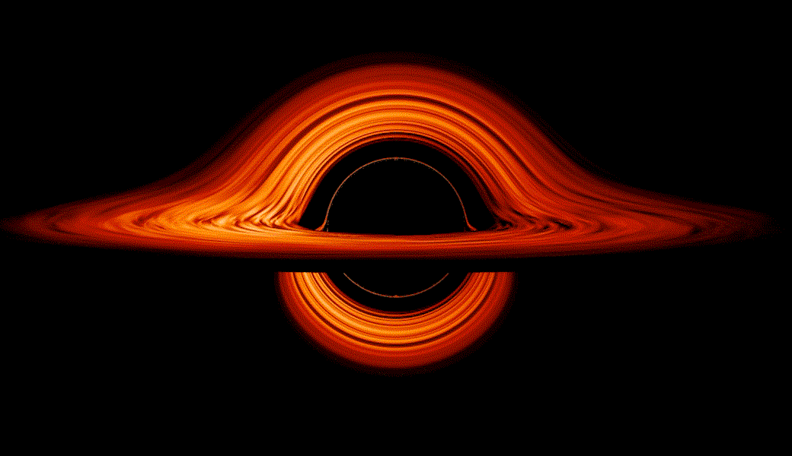

Image by NASA
Learn About Space
Learn the basics about our Solar System
Our solar system is filled with lots of things, ranging from different kinds of planets to asteroids and even comets. We've even sent some space probes around our solar system, visiting all sorts of planets and asteroids. The goal of this website is to share basic knowledge about the planets in our solar system, and to share information about two probes: Voyager I, and Voyager II.

Learn about our solar system!

Learn about two space probes we have sent deep into space!